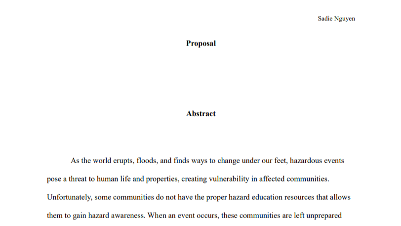
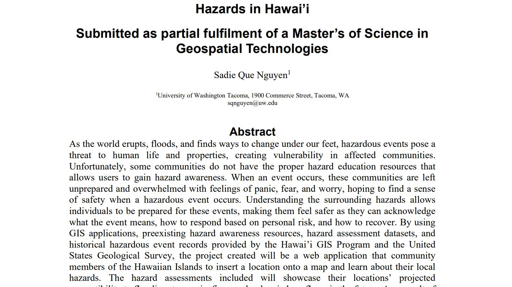
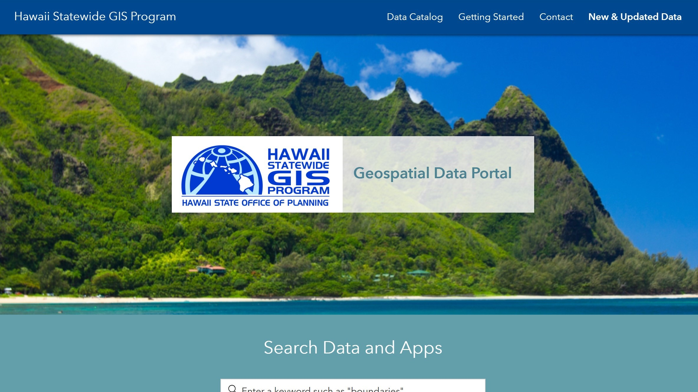
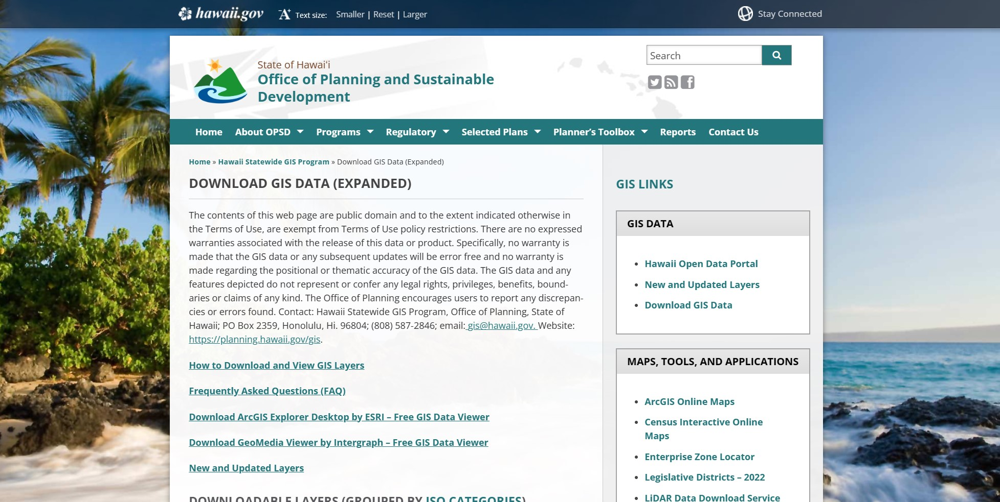

Hazards in Hawai'i
Capstone
Relevant Documents

Capstone Proposal - Winter 2023

Capstone Final - Summer 2023
Data References
Linked Database References

Hawaii Statewide GIS Program

USGS Earthquake Hazards Program

HI Office of Planning and Sustainable Development